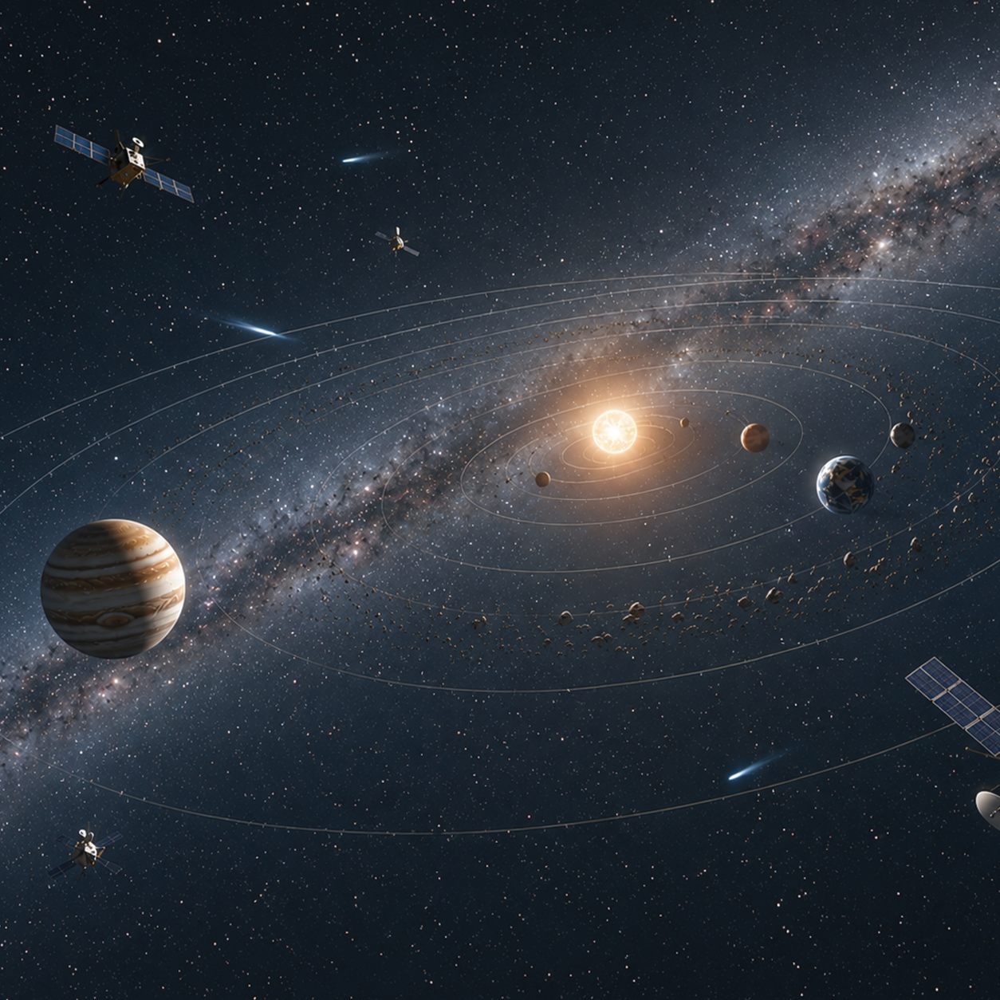

+10
At the scale of the inner solar system, exploration is no longer limited to what can be seen directly, but is driven by continuous robotic and telescopic observation. Mars is no longer a distant unknown—rovers actively move across its surface, transmitting high-resolution images and geological data in real time, far beyond anything available in 1977. Space telescopes now extend human vision far deeper into space, capturing detailed images of distant stars and galaxies that were once only theoretical. Since 1977, thousands of exoplanets have been discovered orbiting other stars, completely changing our understanding of how common planetary systems are and reshaping the idea of what “a solar system” actually represents. The inner solar system is now a dynamic environment of exploration and discovery, where the boundaries of human knowledge are constantly expanding through technology and observation, rather than being limited to what can be directly seen or imagined from Earth. Compared to 1977, the solar system is no longer a static backdrop for human activity but an active frontier of scientific inquiry and potential future habitation.